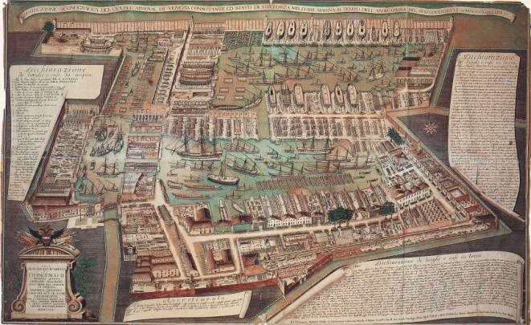
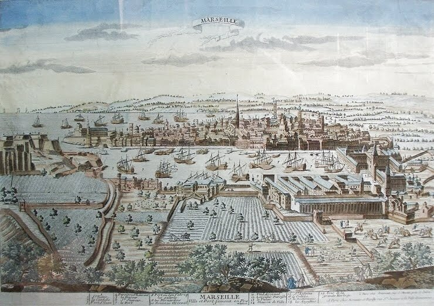

Мы уже писали, что галерная эскадра флота Мальтийского ордена пополнялась как за счет постройки новых галер на верфях Мальты, так и путем заказа кораблей на верфях других стран.
Флагманская галера иоаннитов типа Capitana
Первый арсенал – darsena – в Биргу был построен в 1538-1542 гг., однако первая галера, построенная на его стапеле, была спущена на воду только в 1554 году. В 1607 году великий магистр Алоф де Виньакур (Alof de Wignacourt , 1601—1622) расширил арсенал в Биргу. Правда, не стоить преувеличивать вклад местного мальтийского кораблестроения в строительство флота. Так в периоды 1555–1629 гг. и 1701–1750 на местных верфях не было построено ни одной галеры. Первый «мертвый сезон» можно объяснить подготовкой к турецкой осаде и последующим восстановлением разрушенной инфраструктуры острова, второй – возрастающим значением в начале XVIII века линейных кораблей третьего ранга, составивших основу эскадры парусных кораблей флота Мальтийского ордена. А.Д.Атауз в упоминавшейся ранее работе подсчитал, что судостроительная активность арсенала в период базирования ордена на Мальте была отмечена только в течение 129 лет из 268. Документально подтверждено строительство в Биргу 25-ти галер:
Год спуска | Название галеры | Год спуска | Название галеры |
1535 | Santa Caterina | 1664 | San Pietro |
1543 | Santa Madalena (Capitana) | 1665 | Название неизвестно + 1 Capitana |
1551 | San Michele Arcangelo | 1666 | Название неизвестно |
1554 | Leona + Santa Maria della Vittoria (Capitana) | 1668 | Название неизвестно |
1555 | San Fede | 1694 | Capitana с 30 банками |
1620 | Capitana с 27 банками | 1701 | Capitana |
1625 | Название неизвестно | 1750 | Santa Caterina |
1632 | Название неизвестно | 1770 | Название неизвестно |
1633 | Название неизвестно | 1782 | Capitana |
1636 | Название неизвестно | 1792 | Экспериментальная галера с 24 банками |
1651 | Название неизвестно | 1792 | San Luigi |
1652 | Название неизвестно | Всего: | 25 |
Источник: Atauz
Однако по подсчетам другого исследователя морской истории Мальтийского ордена (Joseph Muscat, The Warships of the Order of St John 1530-1798.1994) за этот период построено было 32 галеры, что, собственно, существенно картину не меняет. Достаточно сравнить активность верфи в Биргу с известными арсеналами Франции и Венеции:
Количество построенных галер за период:
| Мальта | Франция | Венеция |
1651-1660 | 2 | 19 | 112(1645-60) |
1660-1668 | 5 | 26 | 37 |
1670-1700 | 1 | 96 | ? |
1701-1740 | 1 | 23 | ? |
Всего: | 9 | 144 | 350(1619-69) |
Специализация и индустриализация галеростроения на верфях Франции и Венеции позволяли строить галеру в среднем за восемь месяцев, тогда как на верфи в Биргу этот процесс занимал четыре года.

Арсенал в Венеции (Maffioletti) 
Марсель в XVII веке. (Корпуса Арсенала справа.)
Еще одной причиной малой производительности мальтийской верфи являлась высокая стоимость корабельного леса и других комплектующих. Местных источников леса не было, а доставка его из других стран обходилась очень дорого. Лес доставляли из Мессины, Калабрии и Венеции, готовый рангоут – из Калабрии, Неаполя и Триполи, весла – из Калабрии, такелаж – с Сицилии, нагели, железные и медные дельные вещи – из Венеции, ткань для парусов – из Марселя, пеньку – из Венеции и Болоньи (закупать самую лучшую пеньку в России орден не мог по экономическим соображениям). С учетом этого стоимость строительства галер на местной верфи значительно превышала стоимость их заказа в кораблестроительных арсеналах других стран. Поэтому приблизительно 170 галер для мальтийского ордена было заказано на иностранных верфях (Мессина (около трети всех заказов), Марсель (ненамного меньше), Неаполь, Барселона, Генуя, Палермо, Чивитавеккья и некоторые другие). Ограниченность в средствах диктовала руководству ордена следующую практику замены галер: старая галера направлялась в определенный арсенал, где с нее снималось вооружение и оснащение, которое могло быть использовано на новом корабле, после чего экипаж возвращался на Мальту на новой галере. Стоимость оставленной на слом старой галеры вычиталась из стоимости новой. Кроме того, этим достигалась экономия на доставке экипажа новой галеры к месту строительства: для транспортировки гребцов и моряков численностью около 600 человек требовалось четыре галеры! Иногда старые галеры, если они еще могли послужить, отправляли на Мальту в качестве резерва галерной эскадры.